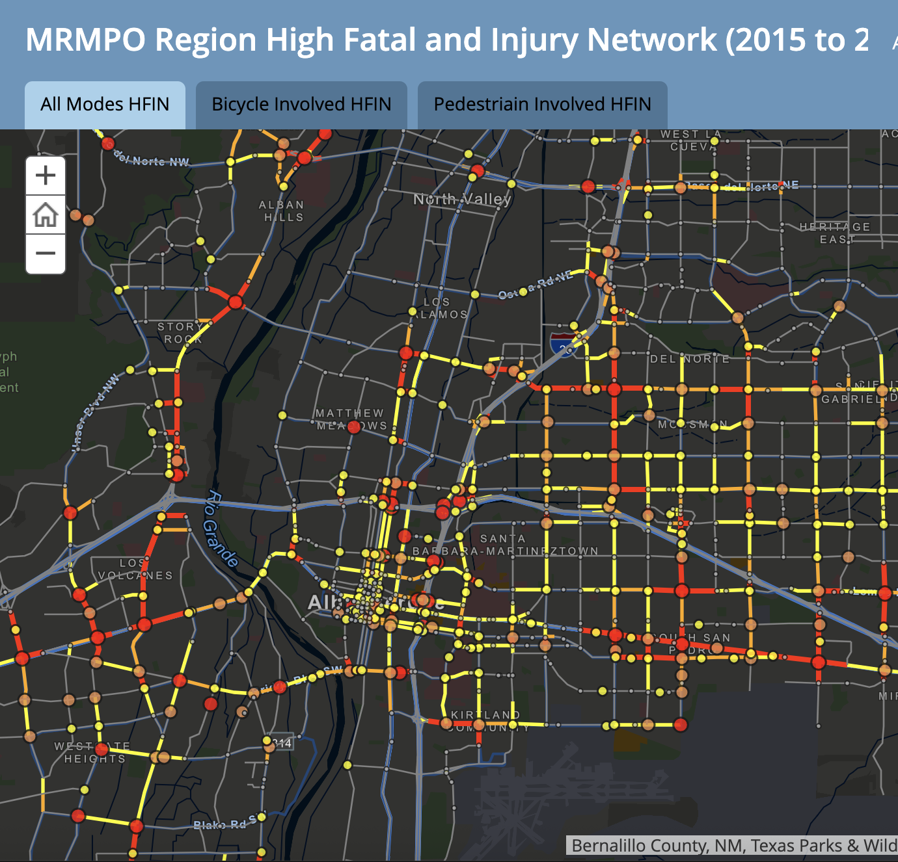
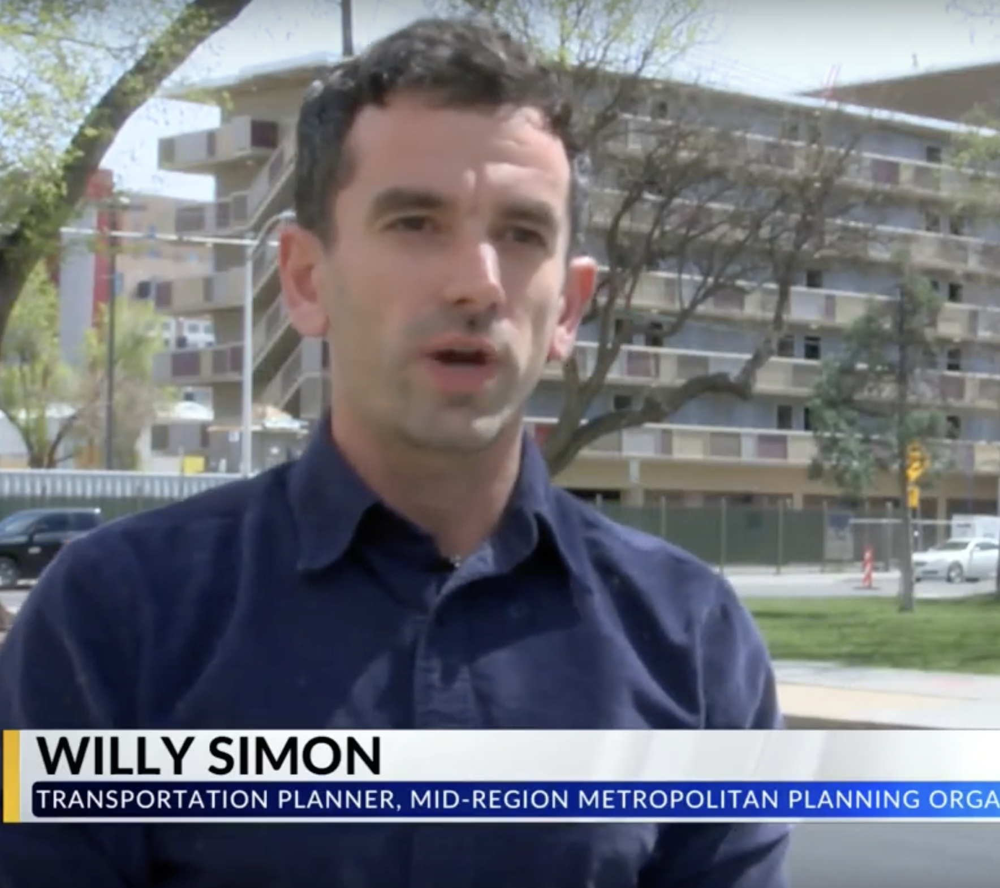

Selected Projects

ART Before and After: A visual and data-driven look at how traffic volumes changed after the constructino of the Albuquerque Rapid Transit (ART) project. Includes interactive map and analysis.

2015-2019 MRCOG Safety Report: Safety report for the Albuquerque Region to be published only as an interactive online map.

Dublin Inquirer Articles: The articles I authored mostly cover the issues of transportation and urbanism within the city of Dublin, Ireland.

KRQE Interview: In my final media appearance as a transportation planner at MRCOG, I discussed key trends from the 2022 crash data I analyzed. This segment, filmed in March 2024, highlights my work translating technical findings into public insight.